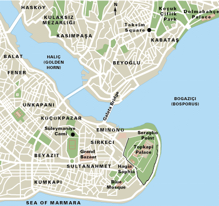

Home
To do
Need to know
Contact
Back to start
Istanbul is a major city in Turkey that straddles Europe and Asia across the Bosphorus Strait. Its Old City reflects cultural influences of the many empires that once ruled here.

In the Sultanahmet district, the open-air, Roman-era Hippodrome was for centuries the site of chariot races, and Egyptian obelisks also remain. The iconic Byzantine Hagia Sophia features a soaring 6th-century dome and rare Christian mosaics.